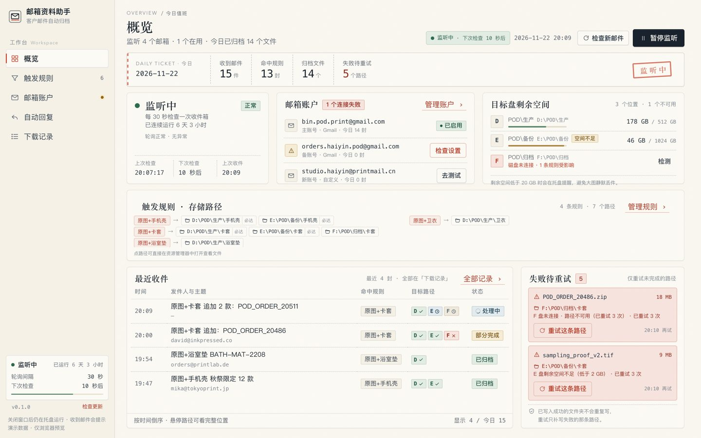
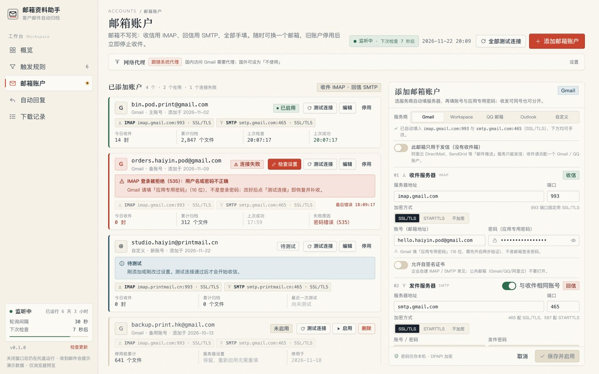
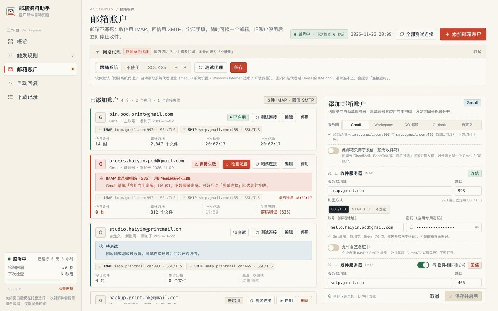
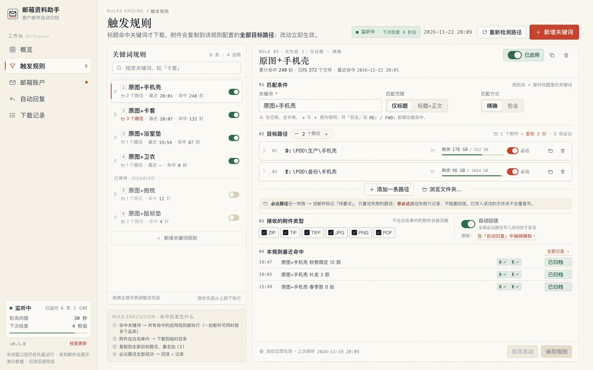
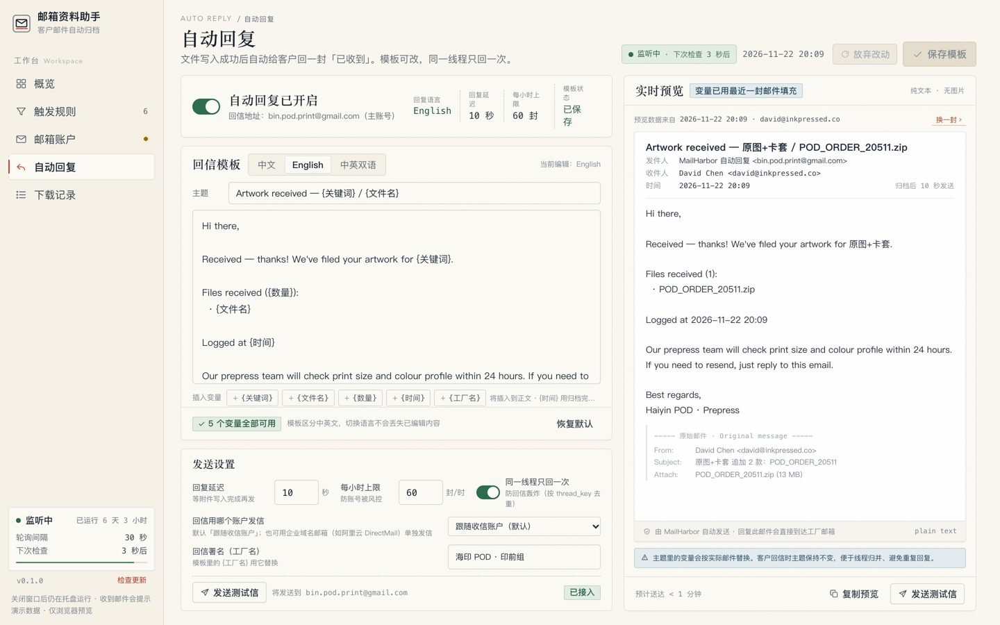
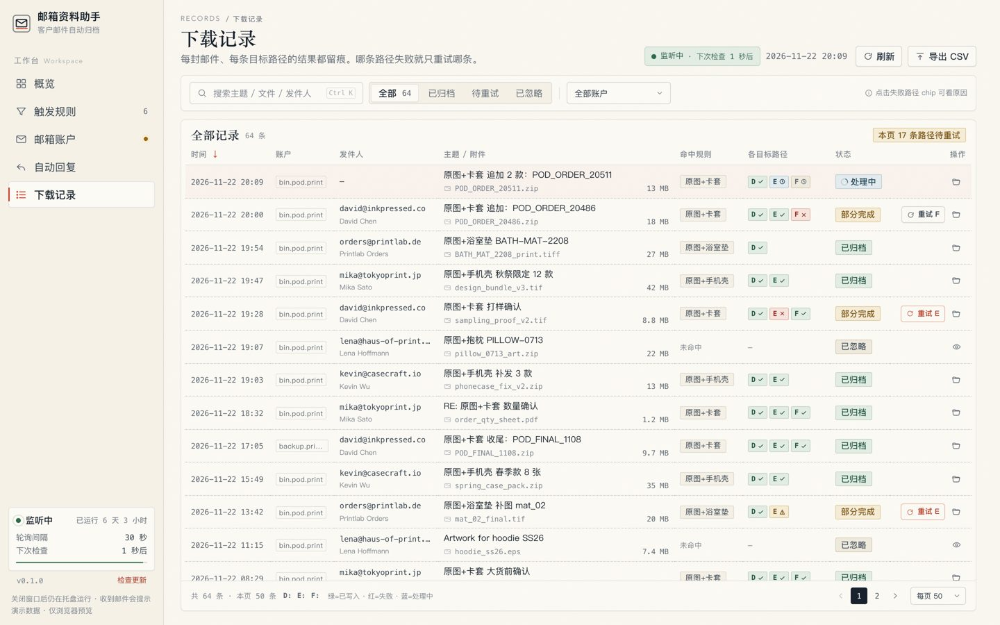

这份手册按「安装 → 配邮箱 → 配规则 → 配回信 → 日常使用」的顺序写， 每一步都标明在哪里点、填什么、成功长什么样、报错怎么办。 照着手册走一遍，约 15 分钟；配好之后不需要每天维护。
| 收件邮箱 | 一个支持 IMAP 的邮箱（Gmail / QQ / 企业邮箱）。Gmail 需要先开两步验证并生成「应用专用密码」；QQ 需要「授权码」。 |
| 存储盘 | 建议单独一块盘或目录（如 D:\POD\生产、E:\POD\备份），预留至少几十 GB 给客户图稿。 |
| 电脑 | Windows 10/11，长期开机不关机，建议关闭睡眠（控制面板 → 电源选项）。 |
| 网络 | 国内访问 Gmail 需要代理；访问 QQ / 企业邮箱一般不需要。 |
| 系统 | Windows 10 1809 及以上 / Windows 11（64 位） |
| 内存 | 4 GB 以上（软件常驻约 150–250 MB） |
| 磁盘 | 程序约 300 MB + 客户图稿所需空间 |
| 权限 | 按当前用户安装，不需要管理员权限 |
MailHarbor-Setup-0.1.11.exe（116 MB）。放在桌面或下载目录。%LOCALAPPDATA%\Programs\邮箱资料助手；想装到 D 盘可点「浏览」改成 D:\软件\邮箱资料助手。路径可以带中文。%LOCALAPPDATA%\Programs\邮箱资料助手 找 邮箱资料助手.exe，右键「发送到 → 桌面快捷方式」即可。也可在安装目录重新运行安装包选「修复」。首次启动会自动做三件事：建数据库、创建默认存储目录、预置三条标题规则（原图+手机壳 / 原图+卡套 / 原图+浴室垫）。软件默认不监听，需要先配好邮箱再开始收件。

| 程序目录 | %LOCALAPPDATA%\Programs\邮箱资料助手（若安装时改过路径，以实际为准） |
| 配置与数据库 | %APPDATA%\邮箱资料助手\mailharbor.db（含账户、规则、下载记录；密码经 Windows DPAPI 加密） |
| 卸载 | 设置 → 应用 → 邮箱资料助手 → 卸载。默认保留上面的数据目录，重装后配置还在；确认不再使用可手动删除该目录。 |
点左侧「邮箱账户」→ 右边「添加邮箱账户」。先选服务商，软件会自动填好服务器地址与端口，你只需要填账号和密码。

| 类型 | 收信 | 回信 | 典型场景 |
|---|---|---|---|
| 收 + 发一体（默认） | IMAP | SMTP | Gmail、QQ、企业邮箱 —— 收客户邮件并用同一个邮箱回信 |
| 仅发件 | — | SMTP | 阿里云 DirectMail、SendGrid 等「邮件推送」服务：只能发不能收，用作回信发件箱 |
noreply@yourdomain.com）。第 1 个账户按「收+发」配，公司邮箱勾「仅发件」，再到「自动回复 → 回信用哪个账户发信」里选中它。myaccount.google.com/security → 「两步验证」→ 按提示开启（需要手机号）。邮箱资料助手 → 生成 → 得到 16 位密码（形如 abcd efgh ijkl mnop）。这个才是要填进软件的密码，不是你的 Gmail 登录密码。imap.gmail.com:993 SSL / smtp.gmail.com:465 SSL。imap.qq.com:993 / smtp.qq.com:465。服务商选「自定义」，然后按邮件服务商给的参数填写：
| 字段 | 怎么填 |
|---|---|
| 收件服务器 / 端口 | 如 mail.company.com + 993（SSL/TLS）。若服务商给的是 143，加密方式选 STARTTLS。 |
| 发件服务器 / 端口 | 如 mail.company.com + 465（SSL/TLS）；给 587 就选 STARTTLS。 |
| 账号 / 密码 | 通常是完整邮箱地址 + 邮箱密码（部分企业邮箱需在管理后台单独开启 IMAP/SMTP）。 |
| 允许自签名证书 | 公司内网服务器证书不是公网 CA 签发时打开；公共邮箱（Gmail/QQ/阿里云）不要打开。 |
smtpdm.aliyun.com + 465 SSL；账号填发信地址（如 noreply@yourdomain.com），密码填 SMTP 密码。在「邮箱账户」页顶部点「网络代理」展开：

| 模式 | 说明 |
|---|---|
| 跟随系统（默认） | 自动读取 Windows 的 Internet 代理设置 / 环境变量。先打开 Clash、V2Ray 等并开启「系统代理」，再选这个。 |
| 不使用 | 直连。国外服务器、企业内网用。 |
| SOCKS5 | 手填地址端口，如 127.0.0.1:7890（Clash 的混合端口）。 |
| HTTP | 手填 HTTP 代理地址端口，软件会走 CONNECT 隧道。 |
imap.gmail.com:993，证书仍按真实域名校验，所以「测试代理」通过后「测试连接」一般就能通过。| 提示 | 原因 | 解决 |
|---|---|---|
| IMAP 登录被拒绝（535） | 密码错 / 用了登录密码 | Gmail 用应用专用密码；QQ 用授权码 |
| 连接超时 / 端口无法连接 | 网络不通或被墙 | 开代理并在「网络代理」里设置；企业网让 IT 放行 993/465 |
| IMAP 加密连接失败（证书） | 自签名证书 | 自建服务器勾「允许自签名证书」；公共邮箱不要勾 |
| IMAP 未开启 | 服务商没开 IMAP | QQ 去邮箱设置开启；企业邮箱找管理员 |
| 551 Main account unavailable | 阿里云 DirectMail 发信域名/账号未验证 | 到阿里云控制台完成域名验证，或换账号 |
| Outlook 预设提示不支持 | 微软已停用基本认证 | 改用 Gmail / QQ / 企业邮箱；Outlook 需 OAuth，当前版本不支持 |
规则决定「什么标题的邮件、存到哪些文件夹」。软件出厂预置三条，你可以随便改、加、删。

| 关键词 | 目标路径 | 含义 |
|---|---|---|
原图+手机壳 | 1 个：D:\POD\生产\手机壳 | 标题命中就存一份 |
原图+卡套 | 2 个：D:\POD\生产\卡套 + E:\POD\备份\卡套 | 同一份文件复制两份（生产 + 备份） |
原图+浴室垫 | 1 个：D:\POD\生产\浴室垫 | 标题命中就存一份 |
D:\POD\生产\卡套 改成 C:\POD\生产\卡套）。原图+卫衣。建议原样照抄客户邮件标题里的写法。【原图+手机壳】、★原图+手机壳、FWD: 原图+手机壳 (2)、原图-手机壳（破折号）都会命中「原图+手机壳」规则；「卡套盒」这类不同品类不会误命中。| 客户写的标题 | 精确模式 | 说明 |
|---|---|---|
原图+卡套 | ✔ 命中 | 完全一致 |
RE: 原图+卡套 | ✔ 命中 | 自动去掉 RE:/FWD: 等前缀 |
原图+卡套 追加: POD_20486 | ✔ 命中 | 关键词后有空格/分隔符 |
原图+卡套打样确认 | ✔ 命中 | 后接「追加/打样/补发/确认/第…」等业务词 |
原图+卡套盒 | ✘ 不命中 | 「卡套盒」是不同品类，避免误归 |
原图＋卡套（全角＋） | ✔ 命中 | 全角/半角、空格自动归一 |

{关键词} {文件名} {数量} {时间} {工厂名} 插到光标处；右侧实时预览是客户看到的样子。海印 POD · 印前组，会替换模板里的 {工厂名}。
客户图稿常见几十 MB 的 ZIP/RAR，弱网下可能超时。软件提供三层保护：
附件是 ZIP / RAR 时，落盘后会自动解压到同一个目标文件夹：
__MACOSX、.DS_Store、带 ../ 的危险条目QQ/微信「超大附件」、网盘分享链接这类邮件，文件不在邮件里（只给一个需要登录/点击的下载链接），任何邮件客户端都无法直接取回。新版的处理方式：
原理差异：浏览器登录 Gmail 下载附件走的是 HTTPS 接口（HTTP/2、多路复用、支持 Range 分段并发、CDN 直出），所以能跑满带宽； 而 IMAP 是单条 TCP 上的串行 FETCH，Gmail 服务端对附件做按需取回并限速，每次只回一小块。我们实测这台机器： 浏览器/代理带宽 3.7 MB/s，但 Gmail IMAP 附件只有约 13 KB/s（每次回 45KB、往返 3 秒）。这不是软件写错了，是协议与服务端策略决定的。
| 做法 | 效果 |
|---|---|
| 调大分块大小（下载记录 → 下载设置 → 分块大小） | 默认 8MB。IMAP 每次只回一块，块越大往返越少；实测 64KB→8MB 提升约 7 倍。这是最有效的开关。 |
| 超时调到 30–60 分钟 | 避免大附件被超时打断 |
| 失败自动重试 / 手动「重试下载」 | 网络抖动时不用重发邮件 |
| 让客户用 HTTP 直链/网盘 | 这类链接可跑满带宽（需登录的网盘走「超大附件」手动流程） |
| 订阅 Gmail API（后续版本） | 走与浏览器相同的 HTTPS 通道，可接近浏览器速度；需要 OAuth 授权 |
Gmail 经常把 QQ 发来的大附件邮件判成垃圾邮件，软件默认会同时扫描垃圾箱：照样按规则下载、解压、归档，记录里标一个「垃圾箱」徽标，但不会自动回信（避免回垃圾邮件）。开关在「下载记录 → 下载设置 → 垃圾邮件文件夹」。
| 设置 | 建议 |
|---|---|
| 分块大小 | 默认 2MB。网络延迟高就调 4–8MB；经常卡住就回到 1–2MB。 |
| 多连接并行 | 默认 4 连接。Gmail 限速严重时 4–6 比较稳，8 以上收益递减。 |
| 单个附件超时 | 大文件调到 30–60 分钟。 |
| 失败自动重试 | 默认 3 次，弱网可加到 5 次。 |
软件左下角显示版本号与「检查更新」。启动 30 秒后自动检查一次，有新版本会后台下载，提示「重启更新」。点一下即可升级，配置和记录都保留。
先确认网络：浏览器能否打开 Gmail。国内访问 Gmail 必须开代理 → 到「邮箱账户 → 网络代理」选「跟随系统」或手填 SOCKS5，点「测试代理」通过后再测连接。QQ/企业邮箱一般不需要代理。
Gmail 要填 16 位应用专用密码（先开两步验证）；QQ 要填授权码。都不是邮箱登录密码。填好后点账户卡上的「测试连接」，会自动恢复并补收。
概览「失败待重试」会写明原因（盘未连接 / 空间不足）。插回磁盘后点「重试这条路径」即可；已成功的路径不会重复写。
软件已兼容 RFC 2047 / RFC 2231 / GBK 三种中文文件名编码。若仍乱码，把「下载记录」里的附件名与服务商名称发给技术支持。
不会。附件只在本机落盘、不回传；密码用 Windows DPAPI 加密保存在本机，日志导出也不含密码。
未购买代码签名证书时可能误报。把安装目录加入白名单即可；正式采购证书后不再出现。
可以。添加多个账户并各自启用即可，「仅发件」账户不参与收信。
导出配置（设置里）→ 新机器装好后导入；密码需重新填一次（出于安全不导出密码）。已下载的图稿建议整个目录拷过去。
不能。微软已停用 IMAP/SMTP 基本认证，只支持 OAuth；当前版本未实现。请改用 Gmail、QQ 或企业自建邮箱。
| 邮箱 | 收件 IMAP | 发件 SMTP | 密码类型 |
|---|---|---|---|
| Gmail | imap.gmail.com:993 SSL | smtp.gmail.com:465 SSL | 应用专用密码（需两步验证） |
| Google Workspace | imap.gmail.com:993 SSL | smtp.gmail.com:465 SSL | 应用专用密码（管理员需允许） |
| QQ 邮箱 | imap.qq.com:993 SSL | smtp.qq.com:465 SSL | 16 位授权码 |
| 阿里云 DirectMail | —（仅发件） | smtpdm.aliyun.com:465 SSL | SMTP 密码（需验证发信域名） |
| Outlook / M365 | 不支持（微软已停用基本认证） | ||
| 数据库 | %APPDATA%\邮箱资料助手\mailharbor.db（账户、规则、记录） |
| 日志 | 同目录（可在设置里调整级别） |
| 客户图稿 | 规则里配置的路径（软件不会移动或删除已有文件） |
| 备份建议 | 定期把「数据库目录 + 图稿目录」一起备份到外接盘或 NAS |
| IMAP | 收信协议。邮件留在服务器，软件只读取，不删除、不标记已读。 |
| SMTP | 发信协议。只能发，不能收。 |
| 应用专用密码 | Gmail 为第三方软件生成的 16 位密码，可单独撤销。 |
| 授权码 | QQ 邮箱为第三方客户端生成的 16 位密码。 |
| STARTTLS | 先在普通端口建立连接再升级加密（常见 143 / 587）。 |
| 必达路径 | 该路径失败则整封邮件标记「待重试」并阻塞回信。 |
| 补扫历史 | 新增规则后，把之前「未命中」的邮件重新处理一遍。 |
需要协助时，请提供：桌面《邮箱资料助手-测试结果.txt》（一键安装脚本会生成）、
「邮箱账户」页测试连接的两行结果截图、以及「下载记录」里出问题的那一行。
项目主页：github.com/moneyfly006/mailharbor · 最新安装包：github.com/moneyfly006/mailharbor/releases/latest